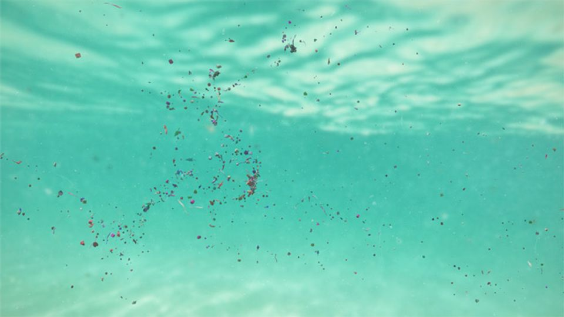
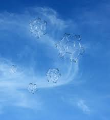
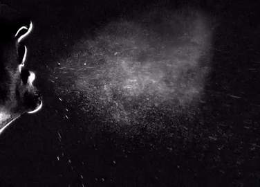

Scientists and engineers study the collective behaviour of particles immersed in
turbulent fluid flows. While accurately predicting the trajectories of a single
particle is not of interest, predicting meaningful statistics from suspensions
of thousands or millions of particles is far more useful, such as when and where
particles will cluster given the fluid field. Such applications include, for
example, tracking microplastics or tiny particles in the ocean such as plankton,
predicting ice cloud dynamics or the spread of pollutants in the atmosphere or
even simulating the spread of water droplets in ventilation systems.



There have been numerous theoretical endeavours to predict such clustering
phenomena, and these are all based on a physical laws, such as the
conservation of mass in the fluid field. One such clustering phenomena is called
the centrifuge effect. This is the tendency for particles that are
denser that
the fluid to be spun outward when the fluid is rotating. Conversely, lighter
particles will concentrate in the centre of a fluid vortex.
The centrifuge effect is derived with the assumption that the surrounding fluid
field obeys the law of conservation of mass (i.e., it has zero divergence). The
issue is that this assumption is broken when conventional numerical methods are
used to simulate particles meaning that the main phenomena responsible for
particle clustering is overshadowed by numerical errors. In other words, instead
of particles clustering where the laws of physics tell them to, they instead
cluster based on the simulation errors. One of the ideas in this study is
therefore to keep this mass conservation law true (as well as other mathematical
features of the equations) throughout the numerical simulation in the hope that
it will produce more physically meaningful results.
The geometric numerical method that we have designed: (1) preserves the
mass-conservation law when interpolating the fluid field; (2) reproduces the
centrifuge effect according to physics driving the model; (3) exploits the exact
solution of the rigid body equations and linear force terms; (4) preserves the
sum of the Lyapunov spectrum; (5) preserves the exact phase space volume
contractivity. Below are some comparisons of the geometric method to a standard
method that is often used by engineers and scientists to simulate such systems.
The standard method is a general-purpose method and therefore is unaware of the
physics driving the model. It therefore: (1) breaks the mass conservation law,
meaning the particles feel that the fluid field is compressible when it should
be incompressible; (2) contracts phase space volume at at erroneous rate; (3)
clusters particles according to numerical errors, not the centrifuge effect.
Below we see some comparisons of the geometric method with the standard method
and also the exact solution, i.e., the perfect solution, free from simulation
errors.
We see that the geometric method does a much better job at reproducing a
distribution of particles similar to the exact solution (as there is a lot more
overlap between purple and blue dots as opposed to the orange dots). What about
if we compare a computationally inexpensive geometric method with a
computationally expensive standard method that is more accurate in the
"conventional sense"?
A more efficient geometric method (purple, left), an
inefficient standard method (orange, right), exact solution (blue,
both).
In both of the above simulations, you can see that the standard method clusters
particles in the wrong regions, whereas the geometric method more accurately
clusters the particles. This is most obvious by looking at the regions with a
mismatch of blue and orange dots. However, the most interesting result in this study
is that in many cases a relatively inexpensive geometric integrator can produce
particle distributions that are more similar to the exact distribution, even if
their average error per particle is greater than an inefficient higher-order
standard method. This strongly supports the use of specially designed
geometric numerical methods for your problem!